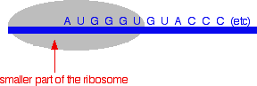
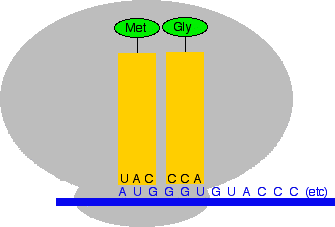
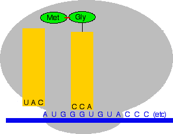
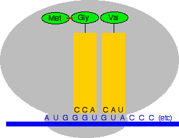
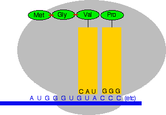

|
PROTEIN SYNTHESIS This page looks at how the information coded in messenger RNA is used to build protein chains. It is designed for 16 - 18 year old chemistry students. If you are a biochemistry or biology student, you will probably find it a useful introduction, but will have to look elsewhere to find all the detail you need. | ||
|
Note: If you have come straight to this page from a search engine, you should be aware that this is the fifth page in a sequence of pages about DNA and RNA. It will all make more sense if you start from the beginning of the sequence with the structure of DNA. | ||
|
From messenger RNA to a protein chain A quick overview of the process You will remember that messenger RNA contains a sequence of bases which, read three at a time, code for the amino acids used to make protein chains. Each of the sets of three bases is known as a codon. The table below repeats one from the previous page:
You may also remember that three codons serve as stop codons, and one (AUG) codes for methionine, but also serves as a start codon. We'll look in some detail at how this works further down the page. Translating the code into an actual protein chain is complicated by the fact that individual amino acids won't interact with the messenger RNA chain. The amino acids have to be carried to the messenger RNA by another type of RNA known as transfer RNA - abbreviated to tRNA (as opposed to mRNA for messenger RNA). All of this is controlled by a ribosome - a hugely complicated structure involving protein molecules and yet another form of RNA (ribosomal RNA or rRNA). This is going to be quite complicated. We'll take it gently and simplify it where possible. Finding the start point of the messenger RNA You may find descriptions of this process which imply (although without actually saying so directly) that the messenger RNA starts with the codon AUG - the start codon - at the 5' end. That's not so! There is a length of RNA upstream of the start codon which isn't actually used to build the protein chain. So how does the system know where to start? How does it find the right AUG codon from all the ones which are probably strung out along the RNA to code for the amino acid methionine? | ||
|
Note: If you don't know what I mean by the 5' end or by upstream, it is probably because you haven't read these pages from the beginning. Taking short cuts is rarely a good idea! | ||
|
Ribosomes come in two parts - a smaller bit and a larger bit. The smaller bit is involved in finding the start point. It attaches to the 5' end of the messenger RNA and moves along it until it comes to a particular pattern of bases which it can bind to. This pattern occurs just before the first occurrence of the AUG codon in the messenger RNA strand. The ribosome now has to build the protein chain starting with a methionine at the AUG codon it has just found. Before we can talk about that we have to introduce transfer RNA . . . Transfer RNA Transfer RNA (tRNA) is responsible for carrying amino acids to the messenger RNA and then holding them there in a way that enables them to join together. Transfer RNA is a short bit of RNA containing about 80 or so bases. These are mostly the same bases as in messenger RNA (A, U, G and C), but it also contains some modified bases which won't concern us at this level. A model of a typical transfer RNA looks like this:
| ||
|
Note: This diagram comes from Wikipedia. Most of the colour coding is irrelevant to this discussion - but note the little bit in grey at the bottom which is where the anti-codon is (see below). | ||
|
This model is quite difficult to follow, and I am going to simplify it down to pick out the two important bits of it At the 3' end of every transfer RNA molecule, the chain ends with the sequence of bases C C A. Remember that the bases in RNA and DNA are attached to a backbone of alternating phosphate and sugar groups. At the very end of the chain is the -OH group on the 3' carbon of a ribose ring. The amino acid gets attached to this by forming an ester link between this -OH group and the -COOH group of the amino acid. This is no different from the formation of an ester between, say, ethanol and ethanoic acid - except that it is carried out under the influence of an enzyme rather than the more fierce conditions used in the lab. | ||
|
Note: How the amino acid attaches to the tRNA is just for interest. It is unlikely to be needed for exam purposes at this level. | ||
|
The other important bit is at the bottom of the molecule, shown in grey in the model. This is known as an anti-codon. As you will see shortly, the anti-codon attaches the transfer RNA with its amino acid to the right place on the messenger RNA molecule. For chemistry purposes, all we are interested in is the attached amino acid, and the anti-codon, so we can simplify the whole thing down. Here is a very simplified diagram showing the transfer RNA for methionine with the methionine attached:
In the diagram, the anti-codon is for the amino acid methionine. The messenger RNA code for methionine is AUG. If you look at the code in the anti-codon for methionine, it is UAC. That is exactly complementary to AUG. The U in the anti-codon will pair with the A in the messenger RNA; the A in the anti-codon pairs with the U in the mRNA; and the C in the anti-codon pairs with the G in the mRNA. How does a transfer RNA molecule pick up the right amino acid? This is all under control of enzymes which recognise the shapes of the various amino acid and tRNA molecules and make sure that they pair up properly. Translation Translation is the name given to the process of turning the coded message in the messenger RNA into the final protein chain. We left the messenger RNA a little while back with part of a ribosome attached to it at the AUG start codon. The diagram shows this, together with a small part of the RNA base sequence downstream of the start codon needed to make an imaginary protein chain. The bases upstream of the start codon aren't relevant to us once the ribosome has found the place to start from. None of these diagrams are drawn to scale!  Now two things happen. The transfer RNA carrying a methionine attaches itself to the AUG codon by pairing its anti-codon bases with the complementary bases on the messenger RNA. And the second, bigger part of the ribosome attaches to the system as well.
Now another transfer RNA molecule with its attached amino acid binds to the next codon along the chain. The next codon on the messenger RNA is GGU which codes for glycine (Gly). The anti-codon would therefore have to be CCA. Remember that A pairs with U, and G pairs with C.  Next, the ribosome moves along the messenger RNA chain to the next codon. At the same time a peptide bond is made between the two amino acids, and the first one (the methionine) breaks away from its transfer RNA. That transfer RNA molecule leaves the ribosome and goes off to pick up another methionine.  Now the process repeats. The next codon is GUA which codes for valine (Val). The anti-codon must be CAU. (If you can't see this at once, stop and think about it. Don't go on until you are happy that you could work out the anti-codon for every codon, and vice versa.)  And again, the ribosome moves forward one codon, a new peptide bond is formed, and the transfer RNA on the left breaks away to be used again later.
And the next transfer RNA with its amino acid comes along . . .  . . . and so on, and on and on . . . Eventually, of course, this will come to an end. How? Eventually, the ribosome will come to a stop codon. The three stop codons don't code for any amino acids, and so the process comes to a halt. The protein chain produced up to that point is then released from the ribosome, and then folds itself up into its secondary and tertiary structures. The final page in this sequence looks very briefly at what happens when the code in DNA becomes changed in some way . . .
© Jim Clark 2007 (last modified May 2016) |
||